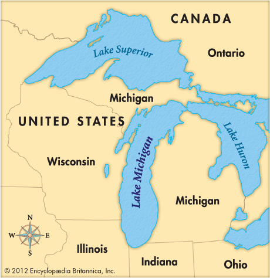

Welcome to Water-Winter Wonderland
Welcome to Michigan, where the beauty of the Great Lakes meets the heart of the Midwest. As the 10th most populous and 11th largest state in the U.S., Michigan offers a captivating blend of history, culture, and natural splendor. Known affectionately as the "Great Lakes State," Michigan beckons with its rich tapestry of experiences. Explore vibrant cities buzzing with life, discover charming towns brimming with character, and behold breathtaking natural wonders that will leave you in awe. From the urban allure of Detroit to the quaint charm of Mackinac Island, and from the serene shores of Lake Michigan to the majestic vistas of the Upper Peninsula, Michigan promises an unforgettable journey filled with endless exploration and timeless memories. Welcome to a land where every corner reveals a new adventure and every moment is etched in beauty. Welcome to Pure Michigan.
| City | Population | Region |
|---|---|---|
| Lansing | 100,000 | Midwest |
| Detroit | 700,000 | Midwest |
| Ann Arbor | 120,000 | Midwest |